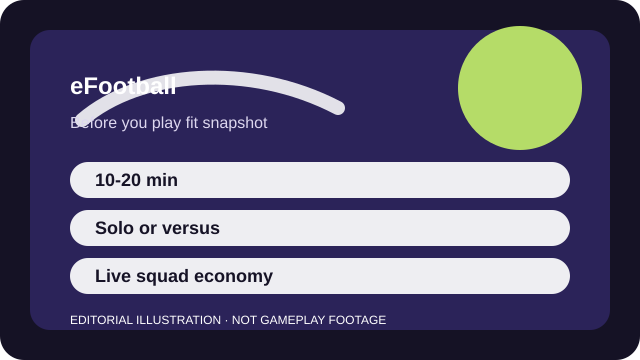

BEFORE YOU PLAY
What this page is and is not
This is a sourced editorial fit profile. It is designed to help with a yes-or-no play decision, and it does not claim a scored hands-on review.
It is worth separating the on-pitch feel from the surrounding live economy. If the passing rhythm clicks, the game may suit you even if you ignore many events. If the live wrapper feels distracting immediately, that feeling usually stays relevant.
The first-session loop to judge is simple: Play football matches, build or tune a squad, and decide how much of the live-service wrapper you actually want to engage with.
Club building and event participation drive the long-term loop more than one clean campaign structure.

FIT SNAPSHOT
eFootball at a glance
| Genre | Football simulation |
|---|---|
| Platforms | PC, PlayStation, Xbox, Mobile |
| Business model | Free-to-play football game with live squad-building and optional paid progression layers. |
| Typical session | 10-20 minute matches that are easy to fit in one sitting. |
| Play style | head-to-head sports live service |
| Learning barrier | Basic passing and defending are approachable, but team-building systems and event logic add friction over time. |
| Social shape | Most of the social energy is head-to-head or local rivalry rather than voice-heavy team coordination. |
WHO IT FITS
Best fit, likely friction, and the social reality
football fans who want free match access and are comfortable checking current mode support before investing time
players who want a fully static offline package or zero service-model uncertainty
Most of the social energy is head-to-head or local rivalry rather than voice-heavy team coordination.
Club building and event participation drive the long-term loop more than one clean campaign structure.
FIRST SESSION PLAN
How to test the fit in one evening
- Play plain matches before you invest energy in team-building systems or event ladders.
- Learn two safe passing patterns and one defensive recovery habit before chasing highlight goals.
- Check current event rules directly on the official live-service pages before you care about the rewards.
- Set a spending boundary before opening any paid card or coin offers.
Use the first session to answer these fit questions instead of judging rank, win rate, or store value immediately.
- Are you here for the on-pitch feel or for long-term collection systems?
- Do you want a live football hobby or a simple side game?
- Will changing events and offers bother you more than they motivate you?
TIME, COST, AND COMMITMENT
What you are really signing up for
| Session budget | 10-20 minute matches that are easy to fit in one sitting. |
|---|---|
| Social demand | Most of the social energy is head-to-head or local rivalry rather than voice-heavy team coordination. |
| Progression shape | Club building and event participation drive the long-term loop more than one clean campaign structure. |
| Spending pressure | Core match access is free, but live squad-building and special offers can add collection pressure. |
Short matches make eFootball easy to sample, but club optimization and event cadence can quietly turn it into a more demanding routine.
Core match access is free, but live squad-building and special offers can add collection pressure.
SOURCES AND LIMITS
What was checked, and what can change
- Event structures and squad-building incentives can change frequently.
- Licensing or featured content can alter how current the presentation feels.
- Monetization offers and progression pacing may shift more often than core match feel.
This profile uses official game pages and defensible general product knowledge to frame the player fit. It does not claim live testing across every platform, accessibility need, or current event rotation.